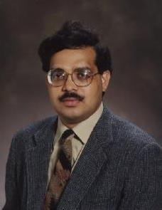

Please visit this page as often as you please as new opportunities may arise for some of you interested in this area. Moreover, this page will keep evolving with an increase in number of research porsonnel involved in this area and increase in resarch funding.
Chemical Enhanced Oil Recovery (EOR) is a very important energy resources area. EOR by polymer flooding, surfactant-polymer flooding and Alkaline-Surfactant-Polymer (ASP) flooding are some of the examples of such chemical EOR processes. Addition of such and other chemical species in the displacing fluids and various flooding schemes have been extensively utilized in order to improve oil recovery. The aqueous phases containing these chemicals are complex fluids with properties that help to improve oil recovery. This is well established experimentally but not all physical processes involved in EOR processes are well-understood and well accounted for in the modeling stage. Mathematical equations modeling such chemical EOR processes involve several field equations (system of nonlinear PDEs) coupled with interfacial transport equations, permeability heterogeneity, capillary forces, wettability, adsorption, and other miscellaneous effects. Accurate and efficient techniques are required which are also robust to cope with a broad range of scales in space (due to permeability heterogeneity) and in time (due to development of complex structures in time and viscoelastic turbulence). These also have to be fast to allow selection of optimal EOR processes by simulation. Progress in this direction has been very slow and the current work is aimed at filling this gap. Our work in this area falls in three distinct tracks:
Track 1: Development and analysis of mathematical formulations modeling different types of flow scenarios of complex fluids.
Track 2: Numerical solution of PDES and development of software, requiring knowledge of pdes including conservation laws, various numerical methods including numerical linear algebra, classical tools of applied mathematics and one or more of the following programming languages (Matlab, C, C++, Python);
Track 3: Investigation into fundamental physical processes which have significant bearing in EOR processes including hydrodynamic instability, interfacial fluid mechanics, wave propagation in porous media, dispersive effects, etc. requiring knowledge of Newtonian and Non-Newtonian fluid mechanics (including viscoelastic flows), a plethora of basic tools of applied mathematics including spectral theory, asymptotic methods, nonlinear waves, etc.
To know more about these Read more
Support:
- National Science Foundation: grant DMS-1522782
- Qatar National Research Fund: NPRP grant 08-777-1-141 (expired)
People:
|

Prabir Daripa
|

Sourav Dutta
|

Craig Gin
|

Zhiying Hai
|
|
Kolton Keith
|

Aditi Ghosh
|
External Collaborators (Past and Present)
- James Glimm (Stony Brook)
- Brent Lindquist (Stont Brook ---> Texas Tech)
- Oliver McBryan (University of Boulder)
- Gelu Pasa (IMAR, Romania)
- Lori Badea (IMAR, Romania)
- D. Palaniappan (Texas A & M University at Corpus Christi)
- Alok Chakrabarti (IISC, Banglore, India)
- Bhavani Dandapat (ISI, Kolkata, India)
- Xueru Ding (Texas A&M, Qatar)
- Liqun Wang, (China University of Petroleum-Beijing, China)
- Fabien Ternat, Total (Oil company), Pau, France